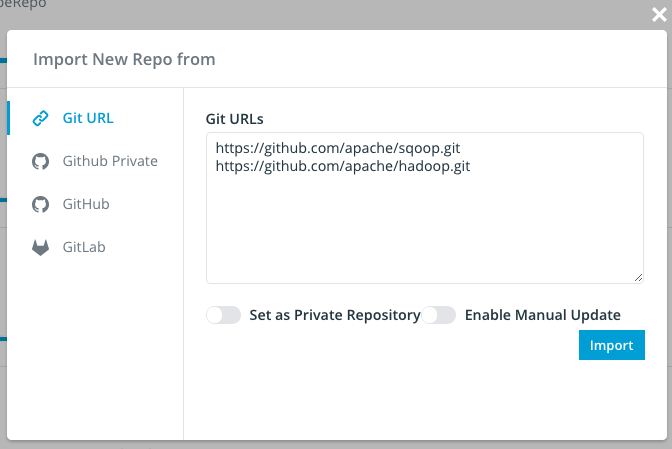
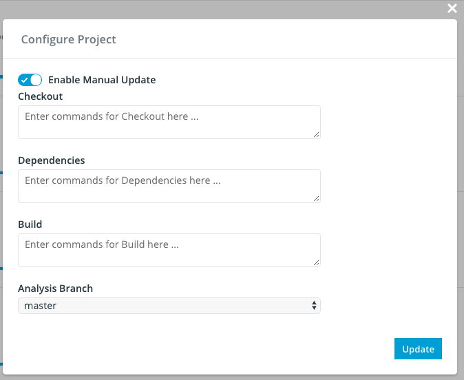

Codatlas New User Guide¶
This chapter is intended to go through the basics of how to use Insight.io. For the rest of the chapter, $HostName refers to the public DNS address that has Insight.io installed. For example if you using AWS $HostName could be http://ec2-52-35-135-191.us-west-2.compute.amazonaws.com
Config to use LDAP¶
Insight.io can use LDAP for authentication with some simple configuration. You can configure these options in lambdalan-enterprise.conf and uncomment the ldap section, as shown below:

Alternatively, you can also setup the LDAP config in $HOSTNAME/projects/admin, the config set in the webpage will be stored in the databse and overwrite the one in config file.
Note that as long as Provider URL property is non-empty, LDAP log in will be enabled and normal username/password login will be disabled.
If your company’s LDAP is using a self-signed CA, Insight.io will need to add the certificate into it’s JVM truststore to enable SSL authentication. To do this, simply put the certificate the following folder:
lambdalab-docker/certs
This folder will be mounted into Insight.io container and all the certificate within will be added into Insight.io trustore.
Create an Account¶
You can create an account at
http://$HostName/signup
The account can either be created with an email and a password, or directly by login with Github account if the admin has setup Github integration.
Note that the first account that is created will be granted admin access.
Add Repository¶
If you are using Github integration with Insight.io and logged in with your Github account, simply go to
http://$HostName/myprojects
Click on Authorize Github Public/Private Repo Access buttons to grant Insight.io access to the public/private repos under your Github account respectively, after which all your repos should be listed under Repositories. Click on the Import this repo switch for the ones you want to import. This will kick-off the code analysis process.
If you are not using Github integration, log in with the account with admin access, and go to:
http://$HostName/admin/projects
Put the git clone address (e.g. https://github.com/apache/hadoop.git) into Enter url here text box and click on “Submit”. You will see the repo showing up in All projects list.
Use Gitlab Plugin¶
Install and Config Native Gitlab Plugin¶
If you are self-hosting Gitlab, Codatlas also provides a native Gitlab Plugin that could add cross-reference to Gitlab page without the requirement of every user to install a Chrome Plugin. The installation requires the administrator having direct access to Gitlab deployment.
First, download the plugin by
git clone https://github.com/lambdalab/plugin.git
The repository only contains two javascript files, put the js files under
$GITLAB_DIR/public/assets/insightio
where $GITLAB_DIR is your gitlab installation folder. For example for an ubnuntu Omnibus release, the folder path could look like:
/opt/gitlab/embedded/service/gitlab-rails.
Then in your $GITLAB_DIR/app/views/layouts/_head.html.haml, add following line
= javascript_include_tag '/assets/insightio/plugin.js'
after
= javascript_include_tag "application".
Finally, we need to config the plugin to work correctly with your Gitlab and Codatas installation.
Open $GITLAB_DIR/public/assets/insightio/plugin.js and make change to the configuration section:
lambdalabConfig = {
url: "http://localhost:9000",
externalUrl: "https://insight.io",
enablePlugin: true
}
url: the URL of your on-prem Codatlas instance
externalUrl: The fall-back server the plugin will be used to resolve a node that is not found within your on-prem instance. For example the definition of java.lang.String may not be found on your on-prem Codatlas instance but will be resolved on insight.io. Set this to empty if you want to disable this feature
enablePlugin: Whether you want to enable the plugin by default. When set to false, users have to explicitly attach enablePlugin=true query parameter in the URL to enable the plugin. When set to true, the plugin is always enabled for all users.
You could see a demo deployment here.
Change settings.xml for Maven project¶
Sometimes you may be using your own Maven Central server to either speed up dependency download or host your own jars in your enterprise network, and usually this custom Maven Central server address is specified in settings.xml file.
In order to make user-specified settings.xml visible to Codatlas’s docker container, you need to mount the file into the container. To do that, open docker-compose.yml (or cn-docker-compose.yml if you use cn-lambda-compose to start the stack) with a text editor, and add the following line under services:tools:volumes section:
$PATH_TO_SETTINGS.xml:/lambda_home/tools/maven/conf/settings.xml
where $PATH_TO_SETTINGS.xml is the absolute path to the settings.xml you want Codatlas to use.

After the change is applied, refresh docker stack by:
./lambda-compose up -d
Customize Repository Build¶
Codatlas is designed to automatically detect build system used for the repository and run default command such as mvn package or gradle build to kick off the build steps, which should work well for most of the repositories. However in cases such as when the project need to download some dependencies up-front, or when some custom build steps, Codatlas provided config settings to customize build steps.
To enter the project config page, login with an admin account, go to Admin Console, hover on the project item and click on the config icon, as shown below.

There are 3 sections of the build config, namely Checkout, Dependencies and Build. Checkout section will be triggered after the repository is cloned, this section is designed for tasks such as checkout a sub-repo. Dependencies section will be run before the build steps are run, this section is designed for downloading dependencies that are not covered by the build script, such as C++ dependencies or other library usually installed by using apt-get. Build section is designed for control the build steps to replace common ones such as mvn package or gradle build
Obtain Build Log from Jenkins¶
Internally Codatlas uses Jenkins to build your project and relies on the build process to perform code analysis. If you see the project does not have any code refernce, chances are there are some issue with the build process. In order to diagnose the issue, you can open a web browser and open Jenkins to obtain the log:
http://$HostName:8080
Locate the build job on right hand side from Build History list, the name of the job will contain the name of the project. See below image for example.

Click the latest number as shown in the graph. And then click ‘View as plain text’ to get the log file.

Use Api Access Token¶
Api access token acts like ordinary OAuth token, so that you don’t need to bear the password and username with you all the time. You can understand it as a counterpart of Personal Access Tokens of Github. On Insight.io, api access token is not only enabled for username/password authentication, but also for all other supported third party OAuth services enabled. This documentation shows you have to leverage api access token to interact with Insight.io with more flexibility.
An user could create as many api access token as he/she wants, but be extremely aware that whenever an token is created, it works forever until you delete/revoke it explicitly. So we highly recommend to always actively manage your api access token whenever necessary.
Token Creation¶
There are 2 ways to create an api access token, choose the one fits your use case best. In the meantime, we are building an UI to manage api access tokens on top of these APIs.
Creation after Authentication¶
If you have already logged into Insight.io already, we can recognize you from your cookie. GET api/createApiToken will generate a new token and return it to you.
GET /api/createApiToken
Usage
Access $Hostname/api/createApiToken in your browser and you should be able to generate a new api token.

You can copy this token for later usage. If you want to find all previous created tokens, please refer to List All Tokens section below.
Creation before Authentication¶
You can also create an api access token without manually login. This is mostly useful for interact with Insight.io programmatically. Depends on how do you authenticate with Insight.io, the usage also varies.
1) Username/Password¶
If you have normal username/password account, simply POST your username and password to /api/authenticate/userpass to authenticate your account and this will generate a new access token to you.
POST /api/authenticate/userpass
Usage
curl -i --data "username=<your username>&password=<your password>" <host>/api/authenticate/userpass
Response
HTTP/1.1 200 OK
{
"token":"961bb2a95e2184a97729398f39c2090b404c07d98cfda7fee6f7d1349d7c6b3577321b49ae920bb1cb4fb30862eb2d7583766a01df6680ffff0094cade160dfa04bce5e0d3fa7e2b43bd5371d1a0ab3b79bba592dbfc5f51dc75871ed4212d2549eac819a51beeaf588fb5e5d00d6241182264240f9c370e960f954a014889c0",
"expiresOn":"292278994-08-17T07:12:55.807Z"
}
2) LDAP¶
Similar to use username and password, POST your LDAP username and password to /api/authenticate/ldap instead, without the need to register on Insight.io before.
POST /api/authenticate/ldap
Usage
curl -i --data "username=<your ldap username>&password=<your password>" <host>/api/authenticate/ldap
3) OAuth¶
To create api access token with a third party OAuth service, POST your OAuth information to /api/authenticate/<provider> with the following json body:
POST /api/authenticate/<provider>
{
"email": "<your email address>",
"info": {
"accessToken": "<your OAuth token>"
}
}
Usage
Take Github as an example:
curl -i --header "Content-Type: application/json" --data "{'email':'<your email>', 'info': { 'accessToken': '<your OAuth token>' }}" <host>/api/authenticate/github
Response
You will get response as below if authenticate successfully
HTTP/1.1 200 OK
{
"token":"961bb2a95e2184a97729398f39c2090b404c07d98cfda7fee6f7d1349d7c6b3577321b49ae920bb1cb4fb30862eb2d7583766a01df6680ffff0094cade160dfa04bce5e0d3fa7e2b43bd5371d1a0ab3b79bba592dbfc5f51dc75871ed4212d2549eac819a51beeaf588fb5e5d00d6241182264240f9c370e960f954a014889c0",
"expiresOn":"292278994-08-17T07:12:55.807Z"
}
Token Usage¶
Whenever your have a token, you can talk to Insight.io via REST api without explicit authentication process. Attach the token in X-Auth-Token HTTP header and you should be able to pass the authentication and get your desired response.
Usage
curl -v --header "X-Auth-Token:<your api access token>" <host>/api/getUserRecentFiles
Response
If you provide the correct token, you should get the desired response:
HTTP/1.1 200 OK
[
{
"id":"github.com/aws/aws-sdk-java",
"name":"aws-sdk-java",
"timeStamp":1496358397966,
"revision":"1.11.105",
"path":"aws-java-sdk-cloudhsm/src/test/java/com/amazonaws/services/cloudhsm/smoketests/RunCucumberTest.java"
},
{
"id":"github.com/aws/aws-sdk-java",
"name":"aws-sdk-java",
"timeStamp":1496358392087,
"revision":"1.11.105",
"path":"aws-java-sdk-core/src/main/java/com/amazonaws/AmazonWebServiceRequest.java"
}
]
Otherwise, you will get error.
HTTP/1.1 401 Unauthorized
{
"error":"Credentials required"
}
Token Deletion¶
To delete or revoke an api access token, GET /api/revokeApiToken with the target token attached in the X-Auth-Token.
GET /api/revokeApiToken
Usage
curl -v --header "X-Auth-Token:<your api access token>" <host>/api/revokeApiToken
Response
You will always get an HTTP/1.1 200 OK no matter whether your token is valid or not.
List All Tokens¶
To view all existing api access token in your account, GET /api/getApiTokens with any valid access token attached in the X-Auth-Token, just like calling any other REST api, which requires authentication.
In the response, created is the timestamp when the token was first created. lastUsed is the timestamp when the token was used most recently.
Usage
curl -v --header "X-Auth-Token:<your api token>" <host>/api/getApiTokens
Response
HTTP/1.1 200 OK
[
{
"uid":"ldap@user.0",
"apiToken":"95e1110da97bf616d2e6838677f0275d73c5bd9e7b746c067599f9b7def02673f09b865929255291d221943f59e2f8060624480fc3d9322ed753604a89dc501060cfd01327fa65ecf65b6c540c236a836afb1e5f3234b84d9a0c23703752bb9ba53133431e300a5ad647767d25194172c824bb2308861562f6cb704f89f5f89f",
"created":1496357580959,
"lastUsed":1496357580959
},
{
"uid":"ldap@user.0",
"apiToken":"c9d1a9dd3ec6fa0f41543071f1c98cc6b66a7350e0ec481e45b4ac25ce962f646adfe474854ccb7b574c2ea2976670c4973c9f7b71bfedc21d4e69d4896640cac0e3a54f26fd508aadba093d192ebbb03f1e977ef03698bccb036128e8cb13b443db1709da637bbcbec72c7e8f19e697f10610f5f744902c5678f5f6cf9e218c",
"created":1496358254649,
"lastUsed":1496358254649
}
]
Import Projects¶
Import Project via Git Urls¶
To import a batch of project at a time, go to your Admin Console and click the Import New Repo button on the top right.
In the popped out modal, you can put multiple git urls into the input box, one url each line.
Notice that there are 2 switchers behind the inputbox, which gives you the options to apply settings to all the imported projects.
- Set as Private Repository: By default, repository on Insight.io are public to all users. However,
with this option opted in, your repository will only be accessible to a limited group of people.
- Enable Manual Update: By default, Insight.io periodically pull updates from remote for all the projects, with this
setting enabled, your repository won’t be updated automatically. See details in the next section.
Configure Manual Update¶
By default, Insight.io periodically pull updates of all projects from remote. We provide 2 levels of configurations to disable auto update in System and Project levels.
System Level Manual Update¶
To enable repository manual update for the entire system, add the following configuration to lambdalan-enterprise.conf.
projectservice: {
enableManualUpdate: true
}
You need to restart the stack to apply this change. This configuration is honored with higer priority than project level manual update, i.e., when system level manual update is enabled, even disable the manual update for a single repository won’t work.
Project Level Manual Update¶
As mentioned earlier in this doc, you can opt in manual repository update when your first import the project. If you did not do that, you can also change the setting in the project configuration modal page.
By toggling the switcher on the top and hit Update button on the bottom, you can flip the configurations of manual update for this particular repository.
Trigger Manual Update¶
Let’s assume you have already, either enabled the manual update for the entire system, or for a specific repository. Then to trigger an update for a given repository, GET /api/updateProject/<projectId> will trigger an update for projectId repository.
GET /api/updateProject/<projectId>
Be aware that you have to authenticate before you can successfully call this API, so an API access token is required in the X-Auth-Token header of your request.
Usage
curl -i --header "X-Auth-Token:<your access token>" <host>/api/updateProject/github.com/apache/hadoop
Switch a Repo from Public to Private¶
If you want to switch an already imported public repo to private, you can do so by calling the following API:
POST /api/switchRepoToPrivate/<projectId>
Note that this API requires admin priviledge to call.
After a repo is switched to private, only admin has access to it by default, you may need to push access setting for the private repo to control how it can be accessed by other users.
Push User Access throught API¶
You can update access of a user by calling the following API:
POST /api/admin/pushUserAccess
And the parameters required are as follows:
{
"userId":"testuser", // userId of the user
"providerId":"gitlab", // providerId of the user
"projectIds" : ["github.com/apache/sqoop", "github.com/dmlc/dmlc-core"] //projectIds of the repos the user can access
}
Note that this API requires admin priviledge to call.